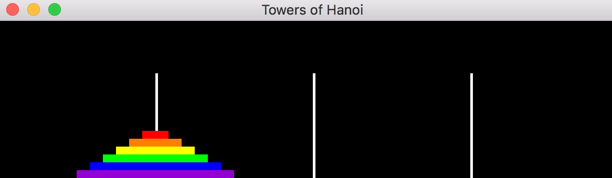
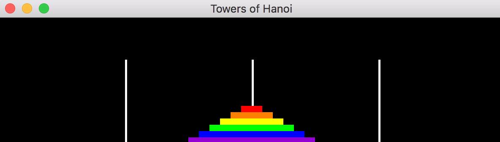
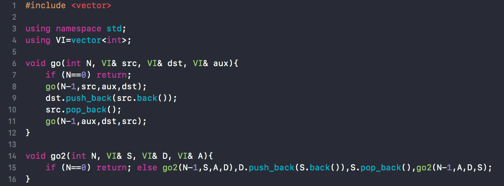

There are 3 rods with N disks stacked on the first rod in descending order (smallest on top and largest on bottom). Move the N disks from the first rod to the second rod. Constraint: only smaller disks are allowed to be placed on top of larger disks. A third rod can be used to satisfy constrained disk movement.
Start: |
 |
Finish: |
 |
A recursive algorithm moves N-1 disks from the first rod to the second rod using the third rod as an auxillary rod. After the N-1 disks are moved, the remaining largest Nth disk is moved from the first rod to the second rod. Then the remaining N-1 disks on the auxillary rod are then moved to the destination rod using the source rod as an auxillary rod. When the recursive call stack completely unwinds in the end, the destination rod contains all N disks in descending order, and the movement of those N disks follows the rules previously mentioned above (i.e. only smaller disks can be placed on top of larger disks).
"go" is my subjectively preferred nomenclature for recursive function designation. Just for fun, I wrote "go2" as a single-line version of "go" using the comma operator.
Source code available on GitHub
| "Seeing is Believing" |
| -Far Seer |